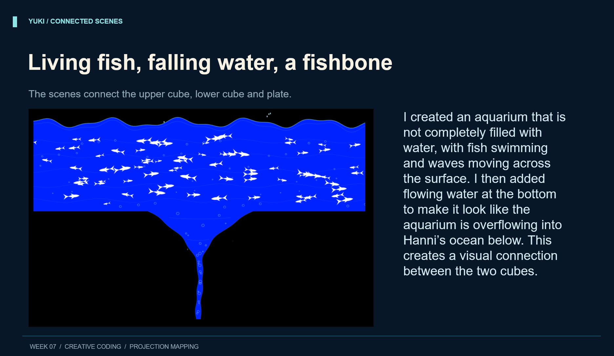
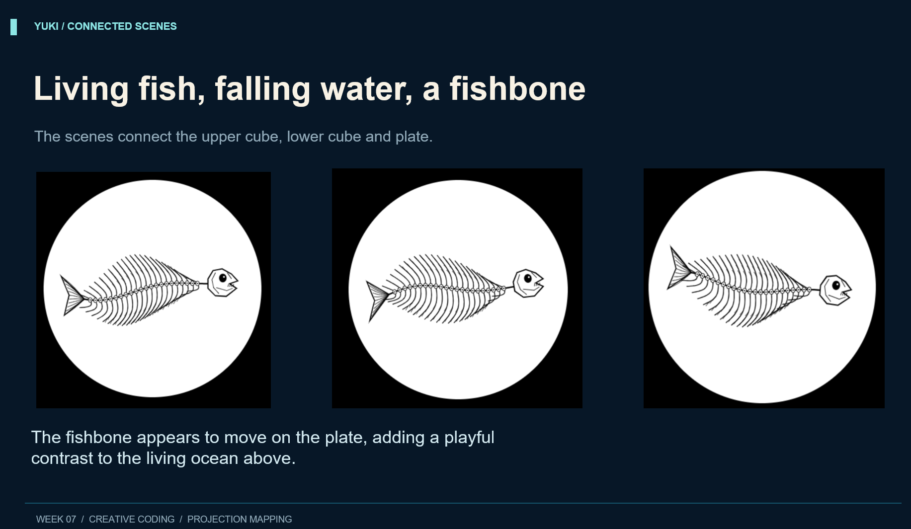
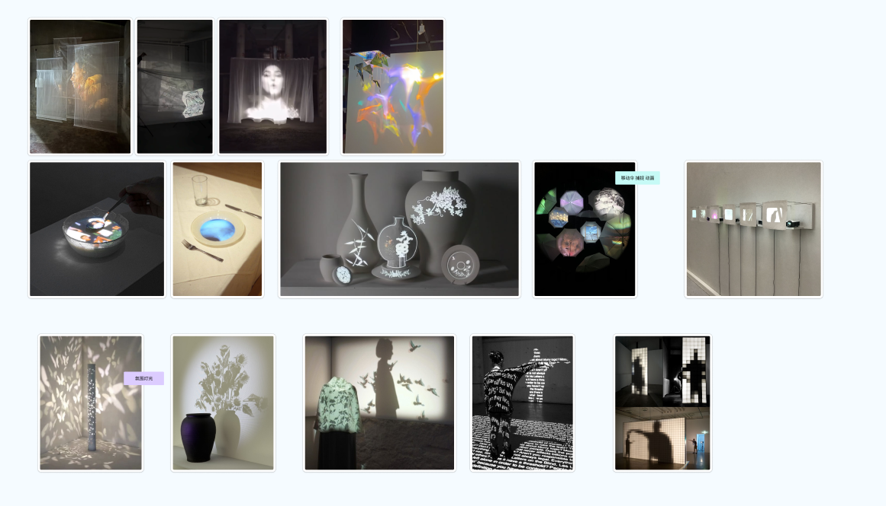

I wanted to create an ocean scene that feels lively and continuous across three surfaces. White fish of different sizes swim through the blue water, while gentle waves, bubbles, and small splashes bring movement to the scene. Below the ocean, the water narrows into a flowing stream, extending the movement downward. I kept the fish simple so their silhouettes would stand out clearly against the blue background.
At the beginning of the project, we discussed different ideas and looked at projection mapping examples for inspiration. We decided on a shared theme so that everyone's animations could connect with each other. After that, we explored different types of installations and chose a structure with two cubes and a plate. We thought this combination would allow us to create different scenes while keeping them connected as one project.

Through this project, I learned how projection mapping can connect different surfaces into one scene. I enjoyed creating the moving fish and experimenting with the flowing water animation. One challenge was making the water look like it was flowing naturally from the upper cube into the lower cube.
I also created an animated fishbone on a plate to contrast with the living fish in the aquarium. Working with my group helped me understand how different sketches can work together to create one connected experience.
If I had more time, I would improve the water animation and make the transitions between the different surfaces smoother.